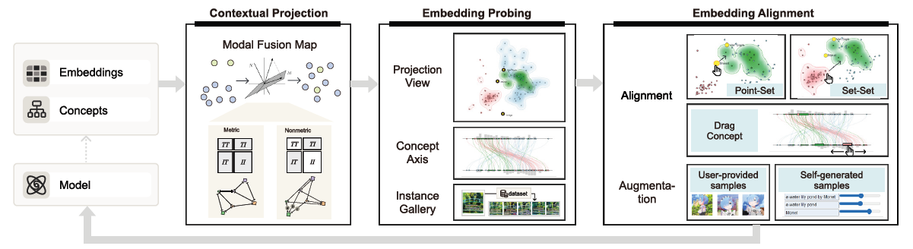
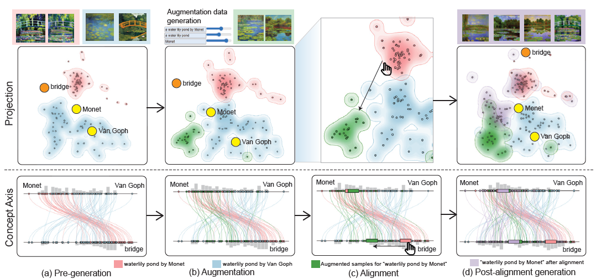
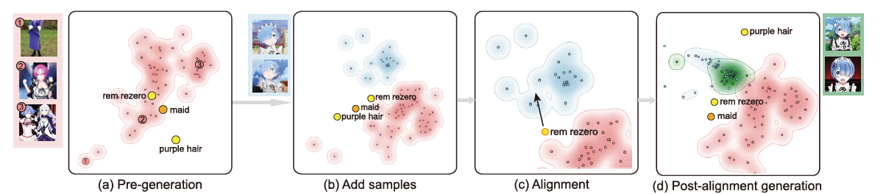

Multi-modal embeddings form the foundation for vision-language models, such as CLIP embeddings, the most widely used text-image embeddings. However, these embeddings are vulnerable to subtle misalignment of cross-modal features, resulting in decreased model performance and diminished generalization. To address this problem, we design ModalChorus, an interactive system for visual probing and alignment of multi-modal embeddings. ModalChorus primarily offers a two-stage process: 1) embedding probing with Modal Fusion Map (MFM), a novel parametric dimensionality reduction method that integrates both metric and nonmetric objectives to enhance modality fusion; and 2) embedding alignment that allows users to interactively articulate intentions for both point-set and set-set alignments. Quantitative and qualitative comparisons for CLIP embeddings with existing dimensionality reduction (e.g., t-SNE and MDS) and data fusion (e.g., data context map) methods demonstrate the advantages of MFM in showcasing cross-modal features over common vision-language datasets. Case studies reveal that ModalChorus can facilitate intuitive discovery of misalignment and efficient re-alignment in scenarios ranging from zero-shot classification to cross-modal retrieval and generation.



If you find this paper useful, please consider citing it.
@article{ye2024modalchorus,
author = {Yilin Ye and Shishi Xiao and Xingchen Zeng and Wei Zeng},
title = {{ModalChorus: Visual Probing and Alignment of Multi-modal Embeddings via Modal Fusion Map}},
journal = {IEEE Transactions on Visualization and Computer Graphics},
volume = {31},
number = {1},
pages = {294--304},
year = {2024},
doi = {10.1109/TVCG.2024.3456387},
}